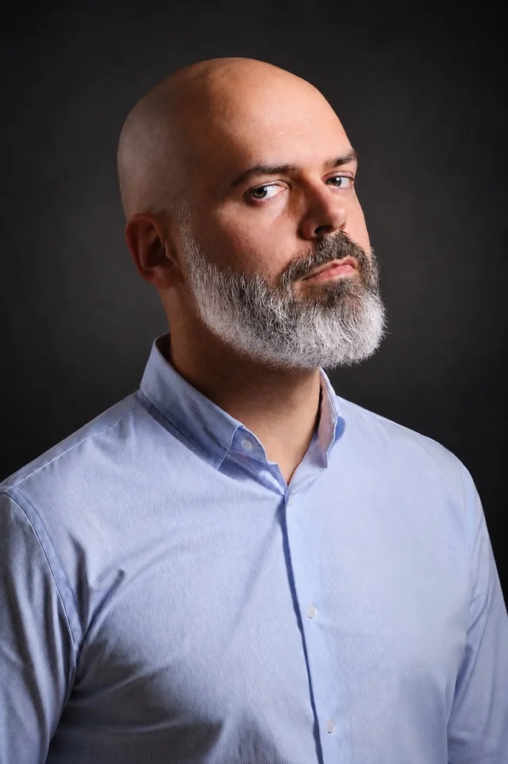
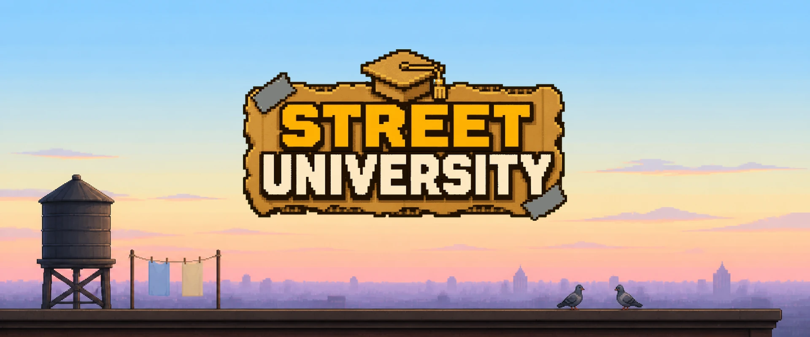

IvanBianco
Senior Technical Project Manager
15 years of software engineering · 4+ years of international delivery
I spent fifteen years writing software for enterprise platforms, then moved to the other side of the table: today I run international technical programmes, with budgets, suppliers and demanding clients. Alongside my job, I am designing and building a multiplatform game, still ongoing, by directing a team of AI agents as if they were suppliers. I bridge the people who build, the people who decide and the people who pay.
Career
From code to delivery
Nearly twenty years in one line: first analysis and code, then leading teams on a SaaS platform, then programmes with budgets and clients across eight countries. Since May 2026, a product of my own on top.
- Analysis and development
- Senior development
- Team & delivery lead
- Project management
- Street University, alongside the job
-
Nov 2021 – todayInternational
Senior Project Manager
Proaudio Group
International technical programmes for enterprise and media clients: recording studios, mastering rooms, professional acoustic spaces.
- 24+ projects end to end in 8 countries (IT, FR, DE, ES, PL, CH, USA, MX), budgets from €500K to €1M; the latest, worth €400K, closed in 9 months with a 30% margin.
- Weekly governance across parallel projects: milestone progress reports, numbered meeting minutes (up to N80), variations, delays and dependencies tracked before they turn into escalations.
- Budget and project P&L, end-to-end procurement, international suppliers and subcontractors, logistics and customs; multidisciplinary teams planned week by week.
- Pre-sales and digital tools: budget revisions, tenders (Netflix BOQ), company migration to Microsoft 365, and AI in the project flow for pre-budgeting and reading minutes for early signs of drift.
- Clients
- Netflix
- Disney
- Sky
- RAI
-
Sep 2016 – Nov 2021Turin
Senior Developer · Team & Delivery Lead
Skylab Italia → TeamSystem
The group's SaaS HR platform: web, mobile, integrations, enterprise clients.
- Modules of the HR platform: Performance, Learning, the mobile app, SSO and document-management integrations.
- Lead in multi-team Agile settings (~35 people), with monthly releases for enterprise clients.
- Technical bridge between client, PMs and architects: requirements turned into work for the team, KPI and analytics modules, process re-engineering after the TeamSystem acquisition.
- Clients
- ENI
- TIM
- Leroy Merlin
-
Feb 2012 – Sep 2016Turin
Senior Developer
Espritec / Levia
Software for logistics.
- Fleet management, route optimisation and real-time monitoring.
- Integrations between on-board hardware and the backend, with continuous data streams; requirements and progress discussed directly with clients.
- Integrations
- PTV
- Transics
-
2007 – 2012Turin
Analyst · Developer
Acus · Proxima-Centauri
- Energy-billing reconciliation (integrity and reconciliation of billing data), idea management, a quoting module for the construction sector.
- Clients
- E.ON
What I'm doing now · since May 2026, ongoing
Street University: a real product, being built with AI agents
Alongside my job I am the technical owner and PM of a cartoonish online multiplayer game (Godot 4), in closed beta on Google Play and TestFlight. The code is written by AI agents I direct as suppliers: tickets, closed briefs, testing kept separate from building, and an approval gate on every batch. The game is the use case; the result is a measured way of delivering software with AI.

- Backlog, sprints and releases: every batch starts from a closed brief and ends with a changelog and a test log.
- A team managed like suppliers: four Claude agents with distinct roles (architect, builder, tester, utility) and OpenAI Codex as a second supplier.
- One-command release pipeline, from merge to both stores, with automatic guards and human approval gates.
- Costs run like a P&L: the token budget is read before spending, reported per sprint and frozen at 90%; the rules saved about 4 million tokens in two weeks.
- 80 beta testers on two stores: reports and player interviews turned into tickets, with triage and priority per release.
How the work flows
I decide. A first AI session splits the work into batches, two rosters of agents build them, and every batch passes a gate before it comes back to me.
Side projects
Hands on the tools
A RAG assistant for project minutes
Answers questions about a project from its meeting minutes, in Italian or English, citing the sources, and builds the risk and variation register on its own. Hybrid retrieval (BM25 + dense) with a project glossary; it also runs on a local model, so the data never leaves the computer.
25% → 100%right source in the top 3 across languages, before and after the glossary (24 test questions)A course for people who don't code
How to work with an agentic assistant: from chat to agent, context and memory, the brief, skills and commands, agents and orchestration, external tools, the cycle and its gates, what to do when it goes wrong.
8modulesLab at home
Large language models running locally (LM Studio, 30B models), and a home automation setup on Home Assistant, MQTT and Zigbee2MQTT. Where I try things out before I recommend them.
Skills
What I bring
Delivery & governance
- Technical project management
- Planning and milestones
- Budget, P&L and risk
- Procurement and vendor management
- Escalations and stakeholders
- Multidisciplinary teams
Product & method
- Product ownership (PSPO I)
- Requirements analysis
- Backlog and prioritisation
- Release management
- Agile / Scrum and Waterfall
Technology & AI
- Backend architectures, APIs, integrations
- Jira, Git, release pipelines
- Python, Godot
- AI agents, LLMs, MCP connectors
- Azure (AI-900)
- Microsoft 365, Teams, SharePoint
Education
Degree and certifications
Languages: Italian (native) · English (C1)
Contact
Let's talk
I'm open to Technical Project Manager, Delivery Manager and Technical Product Owner roles, wherever you need someone who really understands the technology: enterprise software, digital transformation, bringing AI into production. Based in Turin, hybrid or remote.